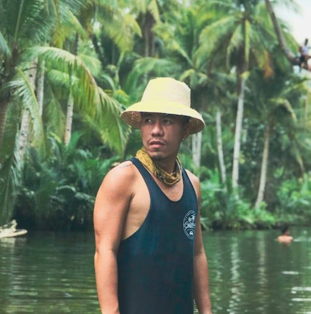

My real name is Dennis but you can call me Marco ( celebrity name, LOL), a travel junkie and I run the popular travel blog, The Pinoy Traveler. My readers and social media followers are mostly from the Philippines, USA, Japan and Singapore. But I have readers from around the world, especially in neighboring countries. It provides travel guides, demographic, and travel hacks that will make everyone a better traveler.
This blog is a trusted resource for destination guides and travel tips in presenting the best locations, attractions, and accommodations, gadgets, and travel essentials It also features unedited and curated photos and videos of people, places, and travel essentials.
My website has a loyal following and a very engaged audience which can be attributed to my expertise in social media. Currently, The Pinoy Traveler Facebook (www.facebook.com/thepinoytraveler ) page has over 340,000 organic followers and the Instagram page has over organic 12K followers.
For campaigns, projects, collaborations, endorsements, social media promotions, product reviews, and banner advertisements, please email me at thepinoytraveler@gmail.com